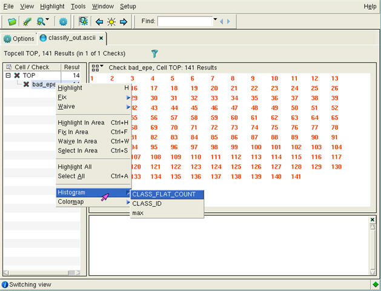

Since the ASCII
results file contains a record of the properties in the rule file,
you have multiple options on how to view the properties.
Procedure
- Click on a rule to show all
the error markers available for that rule (Figure 1).
In the context menu for
the rule (right-click the rule name) you can highlight all instances
of the rule result in the Calibre WORKbench viewer by selecting
Highlight All.
If you right-click on
a rule result from the information pane, you can display a histogram
of all the values for that property type (see Plotting Properties as a Histogram for more information).
Figure 1. Viewing by Rule
- Click on an error to show
the values for the properties for that specific error in the pane
at the bottom of the window (Figure 2).